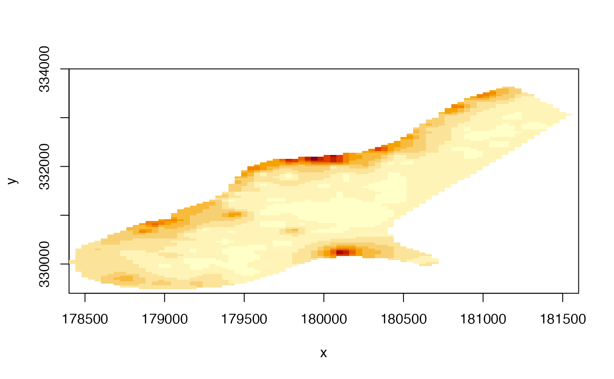

image.RdCreate an "image" type plot of a RasterLayer. This is an implementation of a generic function in the graphics package. In most cases the
plot function would be preferable because it produces a legend (and has some additional options).
image(x, ...)
# S4 method for RasterLayer
image(x, maxpixels=500000, useRaster=TRUE, ...)
# S4 method for RasterStackBrick
image(x, y=1, maxpixels=100000, useRaster=TRUE, main, ...)Raster* object
integer > 0. Maximum number of cells to use for the plot. If maxpixels < ncell(x), sampleRegular is used before plotting
If TRUE, the rasterImage function is used for plotting. Otherwise the image function is used. This can be useful if rasterImage does not work well on your system (see note)
character. Main plot title
Any argument that can be passed to image (graphics package)
If x is a RasterStack or RasterBrick: integer, character (layer name(s)), or missing to select which layer(s) to plot
raster uses rasterImage from the graphics package. For unknown reasons this does not work on Windows Server and on a few versions of Windows XP. On that system you may need to use argument useRaster=FALSE to get a plot.
r <- raster(system.file("external/test.grd", package="raster"))
image(r)
